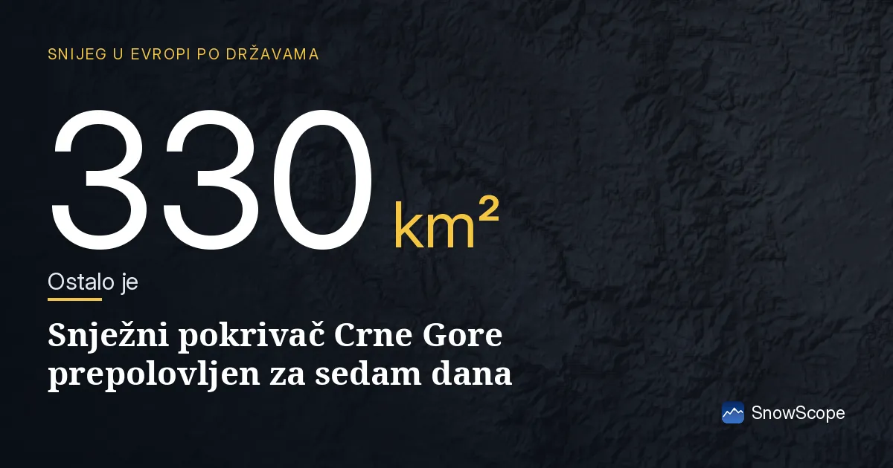

Snježni pokrivač Crne Gore prepolovljen za sedam dana: ostalo je 330 km²
Crna Gora je izgubila tri četvrtine svog snježnog pokrivača u prošloj sedmici, padajući sa 3.570 km² na samo 330 km² danas. Povlačenje je oštre i široko rasprostranjeno, iako visokoplaninski teren iznad 2.000 m—naročito u planinama Prokletije, Durmitor i Bjelasica—zadržava mjerljiv snijeg prije najavljivanog ciklusa otapanja pa zatim zamrzavanja.
Pogledajte prognozu snijega za Ski centar Savin kuk u aplikaciji SnowScopeVisina snijega, upozorenja i 3D karta, besplatno.
Sedmica brzog gubitka
Prošle subote, snijeg je pokrivao 3.570 km² Crne Gore. Danas, taj broj iznosi 330 km². Skala gubitka—3.240 km²—odražava kombinaciju sezonskog raspadanja, orograpskog otapanja od blagih temperatura i odsustva svježe padavine do jučer.
Graf trenda pokazuje dramu jasno. Između 16. i 19. novembra, snježni pokrivač je oscilirao između 10 i 80 km², znak otapanja i gubitka marginalnih površina. Tek kada je svježi snijeg stigao 20. novembra, ukupna površina je porasla na 330 km². Oporavak je stvaran ali skroman, i znatno manji od početne linije od prije sedmice.
| Day | White area | Most new snow in 3 days | Deepest resort |
|---|---|---|---|
| ponedjeljak, 16. novembra | 80 km² | 4 cm | Ski centar Savin kuk |
| utorak, 17. novembra | 20 km² | 0 cm | Ski centar Savin kuk |
| srijeda, 18. novembra | 20 km² | 0 cm | Ski centar Savin kuk |
| četvrtak, 19. novembra | 10 km² | 0 cm | Ski centar Savin kuk |
| petak, 20. novembra | 390 km² | 2 cm | Ski centar Savin kuk |
| subota, 21. novembra | 330 km² | 5 cm | Ski centar Savin kuk |

Gdje snijeg opstaje
Snijeg sada drži samo na najvećim vrhovima. Granica snijega je na 2.000 m. Ispod te nadmorske visine, krajolika je gol; iznad nje, priča se mijenja.
U zoni od 2.000 do 2.500 m, prosječna dubina je 2 cm i 58 posto terena drži neki snijeg. Još više gore, vrhovi Prokletija su dobili 9 cm novog snijega u prošlih tri dana, dok su Durmitor i Bjelasica svaka akumulirala 8 cm. Ove planine djeluju kao azili hladnog zraka, hvatajući orograpske padavine dok vlažan zrak raste i hladi se.

Ski centar Savin kuk stoji sam
Među tri skijaške oblasti Crne Gore, samo jedna ima mjerljiv snijeg danas. Ski centar Savin kuk, postavljen na 2.175 m, prijavljuje 11 cm dubine i 7 cm novog snijega iz prošlih 72 sata. Brdo se nalazi dovoljno visoko da ostane u zoni akumulacije, i njegova nadmorska visina ga je štitila od najgorega otapanja.
Izgledi za brdo su paradoksalni. Sljedeća tri dana donesiće do 21 cm novog snijega, sa najvećom kišom predviđenom 23. novembra (10 cm predviđeno). Ali ovaj svježi snijeg padat će na tanku osnovu. Snijeg na početku sezone je krhak; kamenja i hrapava tla ispod tankog pokrivanja stvaraju opasnosti za skijaše.
Regiona slika
Susjedne zemlje pokazuju sličan obrazac. Bosna i Hercegovina nema snježnog pokrivača danas i predviđa samo 18 cm u sljedeće sedam dana. Albanija, sa druge strane, ima 4 posto pokrivača sa 34 cm predviđenih u istom periodu, što sugerira da viške planine i drugačiji uzorci padavina pogoduju njenim vrhovima.
Crna Gora leži između ova dva režima, sa svojom složenom topografijom koja stvara džepove trajnosti i zone brzog gubitka. Planine koje se čine sjever-jug—Prokletija na granici sa Albanijom i centralne visoravni—hvataju vjetrom nošen snijeg i zadržavaju hladniji zrak duže nego niži, više izloženi teren prema zapadu.
Što dolazi dalje
Naredna sedmica je podijeljena u dva čina. Dani jedan kroz tri će vidjeti akumulaciju; 11 cm je predviđen kao vrhunac širom zemlje, sa najvećim padom 23. novembra. Ovaj svježi snijeg će obnoviti pokrivač na visokom terenu i hraniti osnovu Savin kuka. Ali druga sedmica—od 29. novembra nadalje—pokazuje samo 13 cm ukupno, što sugerira povratak na blaže, suše uslove.
Prva sedmica decembra označava prelaz. Ako visokoPlaninski snijeg preživi privremeno otapanje, rani decembar može donijeti drugu šansu da se gradi održiva osnova. Za sada, skijaši koji planiraju posjet trebaju da provjere zvanični bulletin o lavinama prije nego što krenu van staza, jer brze prelazne snijeg-na-tlu stvaraju nestabilnost.
Podaci i neizvjesnost
Procjene na početku sezone nose urođenu neizvjesnost: plitav snijeg maskira kamen i vegetaciju ispod, a prelazne zone između snijega i gologa terena teško se precizno precizira iz svemira.
Savjeti za skijaše
- Provjeri zvanični bulletin o lavinama prije bilo kakve skijanja van staza, posebno na strmom terenu iznad 2.000 m gdje će svježi snijeg pasti na tanku osnovu i može klizati po kamenu.
- Ski centar Savin kuk na 2.175 m će dobiti najveću korist od predviđenog snijega; niža brda rizikuju mrljav pokrivač dok se ne dođe do ranog decembra.
- Očekuj varijabilne uslove 23. novembra—dan vrhunskog pada snijega. Snijeg će biti najteži na izloženoj visokoj zemlji; zaštićene kanjone mogu brže akumulirati.
- Planiraj putovanja za sredinu do kraja decembra ako je moguće; snijeg na početku sezone je tanji i reaktivniji od sredino-zimske akumulacije.
- Prati aplikaciju za ažuriranja od 29. novembra nadalje, kada se prognoza prelazi na laganiji snijeg i blaži zrak; ovo će odrediti da li skijaška osnova persists u decembar.
About these numbers
Resort snow depths are the deepest snow on the resort's upper slopes on the date shown; they are estimates for an area, not a measurement at one point. Forecasts can change. Always read the official avalanche bulletin before going off-piste.
Cite this report
For research, teaching or the press: the numbers and charts are free to reuse under CC BY 4.0 with this citation.
SnowScope (2026), Snježni pokrivač Crne Gore prepolovljen za sedam dana: ostalo je 330 km², https://snowscope.app/blog/cnr/2026/11/montenegro-snow-cover-loss-this-week-21-november-2026.html, accessed 2026-11-21
SnowScope (Atlas Labs). (2026, November 21). Snježni pokrivač Crne Gore prepolovljen za sedam dana: ostalo je 330 km². SnowScope snow reports. https://snowscope.app/blog/cnr/2026/11/montenegro-snow-cover-loss-this-week-21-november-2026.html
BibTeX
@misc{snowscope2026montenegrosnowcoverlosst,
author = {{SnowScope (Atlas Labs)}},
title = {Snježni pokrivač Crne Gore prepolovljen za sedam dana: ostalo je 330 km²},
year = {2026},
month = nov,
howpublished = {\url{https://snowscope.app/blog/cnr/2026/11/montenegro-snow-cover-loss-this-week-21-november-2026.html}},
note = {Published 2026-11-21 13:13 UTC; accessed 2026-11-21}
}· CC BY 4.0 · Methods, data and tools →
Ski centar Savin kuk: snow and temperature by height, this winter vs last (tools) →
Follow Ski centar Savin kuk
Besplatno: poruka kada dolazi novi snijeg i prognoza svako jutro.